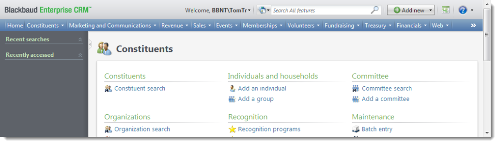
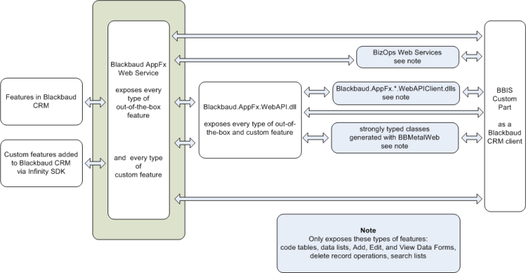

Getting Started
Welcome to the Blackbaud Internet Solutions Getting Started for developers. This site aims to help developers utilize the APIs and SDKs to the fullest extent. In order to successfully understand many of the topics and example discussed throughout the site, there are a few minimum requirements before you get started.
Development Environment
A production BBIS environment can be complex. Aside from BBIS, there will be a Blackbaud CRM installation and any number of other items in your enterprise setup. When you create your development environment, you may need to consider whether it reflects the complexity of the production environment. Will you have separate sandbox environments? Will those mirror the complexity of the production environment? The guidance here will show you how to build a minimalist single machine development environment. From there, you can add complexity.
Create Single Machine Environment
The installation and upgrade guide for Infinity programs is located at: https://www.blackbaud.com/files/support/guides/bbnc/bbinstal.pdf. That guide discusses several paths depending on the solution configuration. This documentation focuses on the Blackbaud CRM and Blackbaud Internet Solutions upgrade path.
- Configure a single developer machine to meet the installation requirements for Blackbaud CRM and Blackbaud Internet Solutions. The installation requirements are available at https://www.blackbaud.com/files/sysreqs/bbecreqs.pdf.
-
On that developer machine, install Blackbaud CRM and Blackbaud Internet Solutions. The downloads page for Blackbaud CRM is https://www.blackbaud.com/default.aspx?pgpId=2255&ID=131&Bundle=Blackbaud+Enterprise+CRM.
Note A password for the downloads page is required. Only the downloads available to your organization appear. There may be multiple versions of Blackbaud CRM available.
We recommend you read through the system requirements and installation instructions prior to running the installer.
- The download to install is an executable file (EXE). Click the link for the executable. After the executable is downloaded, run it as an Administrator.
- The installer prompts for credentials. Although you can install without credentials, many of the configuration tasks required to integrate Blackbaud CRM and Blackbaud Internet Solutions cannot be completed without a database configured with unlocked modules and a user with administrator rights.

- Complete the installer wizard.
-
Install the Infinity SDK. The downloads page for the Infinity SDK is https://www.blackbaud.com/default.aspx?pgpId=2255&ID=193&Bundle=Blackbaud+Infinity+SDK. Run the installer as an Administrator.
Note A password for the downloads page is required. Only the downloads available to your organization appear.
Blackbaud CRM
A Blackbaud Internet Solutions (BBIS) installation assumes a Blackbaud CRM installation. When you install Blackbaud CRM, you select whether to install BBIS items. If you already use Blackbaud CRM but not BBIS, an upgrade that includes BBIS may be performed on an existing installation of Blackbaud CRM. For general information about Blackbaud CRM, see https://www.blackbaud.com/fundraising-crm/blackbaud-nonprofit-crm.aspx. To learn about how to use Blackbaud CRM, read the user guides at https://www.blackbaud.com/howto/crm.aspx. Blackbaud CRM is built on Blackbaud's Infinity platform.

Blackbaud Internet Solutions
Blackbaud Internet Solutions (BBIS) is a content management system for websites that integrates with Blackbaud CRM. To learn about how to set up and use BBIS, read the user guides at https://www.blackbaud.com/howto/crm.aspx#BBIS. BBIS shares many features with Blackbaud NetCommunity, including a web-based interface.

The major difference is that Blackbaud NetCommunity integrates with solutions such as The Raiser's Edge version 7 and BBIS integrates with Blackbaud CRM. BBIS functionality surfaces in the Webarea of Blackbaud CRM.

Infinity SDK
Blackbaud CRM is built on Blackbaud's Infinityplatform. Depending on the solution, the Infinityplatform includes an SDK and web APIs. Blackbaud CRM includes both. When you develop using the Infinity SDK, you create specs which define features. You load the specs into a catalog. But the Infinity SDK also includes a project template that supports adding custom parts to BBIS.
When you customize BBIS, you may find that you only need to create custom parts. But if your customization involves custom integration with Blackbaud CRM, you may need to access Blackbaud CRM through one of its web APIs. If you need to customize an API, you may need to use other parts of the Infinity SDK.

BBIS Understanding
The developer guides and code examples available on this site assume you have a solid understanding of basic BBIS and CRM functionality. This includes how information is organized within BBIS. For more information about general BBIS usage, please visit the How-to User Guides.
Website Customizations
Blackbaud Internet Solutions (BBIS) provides an open, programmable architecture that allows you to incorporate powerful customizations into your website. With custom parts and the Infinity SDK, you can create a vast array of rich website enhancements to surface on the website and in Blackbaud CRM. The integration between built-in features and custom features is seamless and transparent.
BBIS is built on Microsoft ASP.NET technology, and the CMS leverages the Web User Control concept to construct pages with distinct reusable components called parts. Each part is implemented as a web user control, so if you can create a .NET user control for a custom part, you can store and manage it in BBIS. To build customizations for your website, you should understand BBIS from a site designer’s perspective and have a working technical knowledge of ASP.NET.
BBIS builds web pages on demand from content in the database, but it can pull content from other places as well. For example, the News Reader part pulls RSS feeds from other sites and just stores design-time settings in the data base such as which blog to show. Several parts also pull data from BBIS, and you can pull additional data with custom parts as necessary. Custom parts allow you to add features and content to your website, and with the Infinity SDK, you can allow custom parts to access back office data and capture new data for the back office from custom parts.
BBIS is built on a Service Oriented Architecture and uses .NET web services to deliver data between the website and back office. Two built-in web services manage the website’s access to BBIS data and the back office’s access to web transaction data such as donations and profile updates. The web service technology provides data access across the Internet using firewall-safe protocols such as HTTP and HTTPS, and this allows you to host BBIS websites in different locations than the back office if necessary.
BBIS components form a pipeline that connects the website and the back office. This full circle model allows you to display and edit back office data on the website and to download data from the website to the back office.

At key points in the pipeline, BBIS provides open access to developers. With a moderate level of ASP.NET programming experience, a developer can create custom parts and include them in the CMS just like built-in parts. Custom parts surface in all content management features, such as the page designer, role-based security for targeting content, and scheduled publishing. Custom parts can do anything that .NET web user controls can do, including the display of HTML-based content, forms, and information from other systems.
Types of Customizations
With the Infinity SDK, you can:
- Add features to your installation of Blackbaud Enterprise CRM
- Use template projects to create clients to access Blackbaud Enterprise CRM with Infinity web APIs
- Create custom parts for Blackbaud Internet Solutions which can also access Infinity web APIs
With those capabilities, you can create customizations to further integrate your BBIS websites with your Blackbaud CRM installation.
How a BBIS custom part can access Blackbaud CRM features
The Blackbaud AppFx web service exposes Infinity features as a web service. This web service is loosely typed. But you can access out-of-the-box and custom features through it. For example, if you add a custom code table your Blackbaud CRM installation using the Infinity SDK, you can access it through the Blackbaud AppFxweb service.
A wrapper DLL that ships with the SDK called Blackbaud.AppFx.WebAPI.dll makes it easier to access the Blackbaud AppFx web service with .NET client applications. However, the SOAP client classes defined by this assembly are still loosely typed.
The Blackbaud AppFx web service and Blackbaud.AppFx.WebAPI.dll client classes are loosely typed. For stronger typing, BizOps web services provide a wrapper that enables stronger typing than the Blackbaud AppFx web service. However, you can only access some features through BizOps web services.
Similarly, Blackbaud.AppFx.*.WebAPIClient.dlls provide strongly typed classes for .NET clients organized into namespaces. But only features that ship with the product are represented.
However, using a utility called BBMetalWeb, you can generate strongly typed client classes for features exposed by Blackbaud AppFxweb service. So you have many options, the most robust of which are assemblies that contain proxy classes for use by .NET clients. The diagram that follows shows the ways a BBIS custom part can communicate with Blackbaud CRM features via the web APIs and DLLs.

Working with GUIDs
Through most of the BBIS endpoints you'll notice the use of GUIDs, or Globally Unique Identifiers. Currently, the only way to locate the appropriate GUID for your call is to query the applicable database table.
For example, whether it's using Donation/Create endpoint of the Advanced Donation Form API or the CardNotPresent method of the Blackbaud Secure Payments API, the following guids are common when created donation transactions.
| Description | Table | Column |
|---|---|---|
| Revenue attributes that can be included with a donation transaction. | ATTRIBUTECATEGORY | ID |
| Id of a designation to which a donation amount should be allocated. | DonationDesignations | BackOfficeIDGUID |
| Id of the merchant account that should be used to process the donation. | ClientMerchantAccounts | BBPSID |
© 2014 Blackbaud, Inc. All rights reserved.